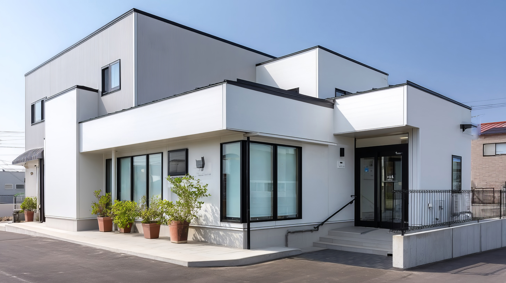

当院について

人と動物が、安心して毎日を過ごせるように。
動物たちとご家族が、心身ともに健やかな毎日を送れるよう、
私たちは日々の健康管理から生活面のご相談まで
幅広くお手伝いしていきます。
動物たちとご家族が、心身ともに健やかな毎日を送れるよう、
私たちは日々の健康管理から生活面のご相談まで
幅広くお手伝いしていきます。
診療対象動物
犬
猫
うさぎ

アヒル
カエル
ヘビ
診療内容
- 予防医療（ワクチン、避妊去勢）
- 一般診療(内科/外科)

診療日のお知らせ
| 診療時間 | 月 | 火 | 水 | 木 | 金 | 土 | 日 |
|---|---|---|---|---|---|---|---|
| 9:00~11:30 | ○ | ○ | × | ○ | ○ | ○ | × |
| 15:00~18:30 | ○ | ○ | × | ○ | ○ | ○ | × |
診療時間
9時00分~11時30分/15時00分~18時30分
※午前最終受付11時00分/午後最終受付18時30分
休診日水曜日・日曜日
駐車場 8台 完備